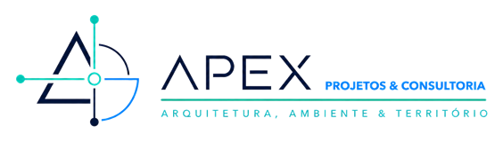

Carregando…

Os 15 mapas do Estudo de Impacto de Vizinhança do Pró Brazilian Supermercado, apresentados em três estilos de prancha, e as duas propostas iniciais de layout. Clique em qualquer mapa para ampliar.
As imagens são as próprias pranchas exportadas do projeto cartográfico, em A3 paisagem, sem alterações. Use o botão "Tamanho real" ou clique sobre o mapa para ver os detalhes; as setas do teclado passam de um mapa para o outro.
Página exclusiva para apresentação dos resultados. Impressão e download estão desabilitados; as pranchas finais em PDF são entregues junto ao estudo.